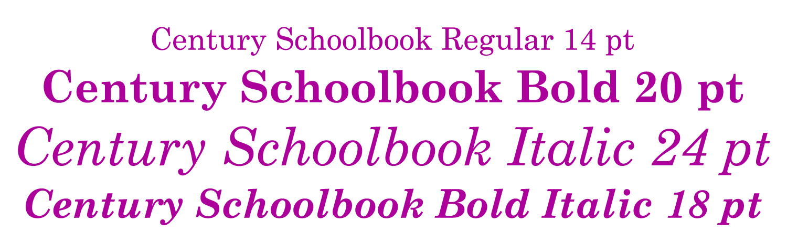

Types of Fonts
As I briefly explained on the definitions page, fonts are basically just a subset of a typeface. Any variation to a typeface is considered a font. There's many different subsets and I'll do my best to go through each one. The most common variations are...
- Regular
- This is pretty much just the basic form of the typeface
- Bold
- This change makes the typeface characters bulkier
- Italic
- When text is italicized it's given a slight slant
- Bold Italic
- When bold italic is used the characters get the effect of both so they'll be bulkier and have a slant
- Changing the Size
- Pretty self explainatory but it's just when you change the size of the text

There are some more uncommon subsets like thin, medium, semi-bold, ultra italic and etc that allow you more versatility when you wanna put a bold or italicize effect on your text. But the one that most people don't know about is the condensed or wide variation. This variation is really just changing the tracking (or spacing) between each of the letters but with these variations it's already done for you. I'm sure there's many font variations and names I missed due to the hundreds and likely thousands of different fonts out there but I hope this article helped you understand how typefaces can easily be changed and new fonts can be made.